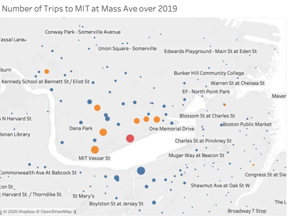
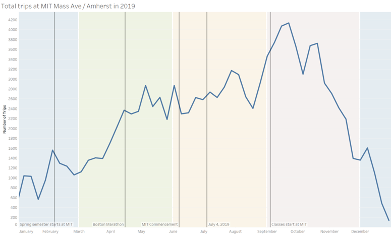

The data says that the United States is the country with the highest CO2 emissions per capita in the world. We want to tell this story because today’s children will be the group most impacted by the effects of climate change and should be able to advocate for themselves.
This sketch was designed for an intended audience of junior high students. We decided to focus on junior high school students because they are far enough in their educational journey to have been exposed to charts and different types of data visualization. At this age, they are also familiar with the concept of climate change but are still young enough to be forming their own opinions about the subject. Our aim was to use the World Bank global CO2 emissions data to contextualize the issue of carbon emissions in a way that provides children with enough information to empower them to learn more and take action but not so much that they feel overwhelmed or scared.
Inspired by this recent and popular comic explaining coronavirus to children, we chose to use a comic-strip inspired format for this piece.
Future improvements
In the next iteration of this sketch, there are a number of improvements we could make to build a richer, more compelling story that would effectively meet the goal of educating and empower kids to take on the issues of climate change.
Add suggestions on where the kids can go to learn more
Provide examples of other children who are making a difference in this space, including Greta Thunberg, Leah Namugerwa, and Autumn Peltier.
Share ideas for how kids can reduce their family, school, or community carbon footprint.
Our audience for our data story is the attendants of the World Economic Forum, who are the world’s top leaders meeting to shape the global, regional and industry agendas for the year. We want these influential actors that can have a great impact on climate change to think and talk about climate change, not only on stage, but also behind the scenes. We believe that these are the people who we need to target with our data presentation as they are responsible for enacting political change and climate action.
We want to tell this story because we want to show that if the countries and leaders take the right actions, economic growth is possible without increasing carbon print. We are calling for a better measure of aggregate carbon emissions to account for economic growth and the status of an economy as a developed or emerging market. Our approach to presenting the data is effective as it includes an interactive chart as well as more sophisticated analysis when running the regressions. This allows us to capture our target audience’s attention while delivering the type of analysis that they likely expect our presentation to have.
We designed our data story to be told on a large interactive board on the hallways of the conference. From far we aim to draw attendants’ attention by the size and the visuals of our data story.
When the person approaches the interactive board, then they can drag the timeline to see the change in economic growth and CO2 emissions. The charts were created using Adobe Illustrator and Photoshop, with building height representing GDP growth rate and size of the the black circle representing CO2 emissions.
We selected the time range as 6 years before and 6 years after the 2008 financial crisis as it provides a good framing and structure for our story. We normalized the building heights, which represent GDP of each country, to 1 in 2002 so that we can emphasize economic and emissions growth over years across the 3 countries rather than the absolute GDP value. The density and size of the black circles represent the CO2 emissions, which were also normalized to 1 for the aforementioned reason.
While sliding the timeline, the viewer can also tap on the country that they’re interested in to see detailed statistics. We assume that our audience have the background to understand the statistics we’re showing in text because they understand economy.
After looking at countries individually, the viewer can also click on the summary option to see the results of the statistical analysis we do. We show the results as text with an explanation of the statistical analysis and the statistical terms which make the results significant.
We hope that after being moved by the visuals, our viewers can further discuss the statistics between each other.
For our data story, we used two datasets from World Bank: CO2 emission data(https://data.worldbank.org/indicator/EN.ATM.CO2E.KT) and GDP data (https://data.worldbank.org/indicator/NY.GDP.MKTP.CD). Both of these datasets span a timeline from 1960 to 2014 and we used all the data available for our data analysis. However we implemented the data visualization only for the years between 2002 and 2014 (centered around 2008) The reason for this decision is that we assume that our audience of world leaders and economists know about the 2008 recession and can have an immediate reaction when they see the timeline of the visualization.
The statistical analysis we ran with the CO2 emission and GDP data show that there is a statistically significant high correlation between change in economic growth and CO2 emissions in the United States and China, whereas in the case of Sweden, the correlation is much lower and less significant. Correlation between GDP growth and CO2 emissions is the same for the US (which is a developed economy) and China (which is an emerging economy), whereas correlation is significantly lower for Sweden (which is a developed economy.)
We found that there is a high correlation of 0.342 between GDP growth and CO2 emissions across all 3 countries. We also found that there is no statistically significant difference between the Chinese GDP differential and the US GDP differential. This implies that the US and China essentially have the same levels of correlation between GDP growth and CO2 emissions, which is concerning since that China was an emerging market for a large portion of the time period studied whereas the US has been a developed market for quite a while. The Swedish GDP differential is -0.124 indicating a much lower correlation between GDP growth and CO2 emissions for Sweden, which is a positive sign since Sweden is a developed market and has been aggressively pushing for climate action.
For the next iteration of our sketch, we would want to add all countries to our system so that the user could choose which countries they would like to compare and visualize in the beginning. We also would change the colors of our visuals to be stronger so that it can draw more attention and make the viewer feel something.
The data say that 1) energy companies are major contributors to CO2 emissions and 2) that lobbyists tied to these companies pay exorbitant sums to American politicians, with peaks in spending tied directly to moments where there is critical legislation at stake. We want to tell this story because we believe that young American voters who care about climate change have the ability to change this, but need to know about it first.
The process
We started this process by exploring global World Bank data on key drivers of carbon dioxide emissions. On learning that electricity and transport are leading global causes, we were curious as to how this dynamic played out in the United States and why it is able to continue despite strong discourse surrounding climate change. We suspected that while there may be progress on individual levels and awareness around how our personal consumption choices may impact climate change, that the large-scale drivers of the problem was really industry with too high a vested financial interest to divest from its current production approaches. A symptom of this high vested interest is how much these companies are willing to spend to protect their business activities–hence our interest in lobby spending. We were surprised by the intensity of spending by electricity companies and how neatly these lined up with mainly Republican candidates. We came across many articles that showed how lobbyists spent money prior to critical voting periods, and how that directly blocked legislation that would limit their activities–and ultimately limit CO2 emissions. We do not believe the voting public is generally aware of this and opted for a more optimistic approach where we assume elections, and the electorate, have the power to change the status quo.
The construction of a narrative, format, and aesthetic style revolved around our target audience. We decided on young voters because although they are more likely to believe in the importance of tackling climate change, they tend are not turning out to vote as needed. That decision meant that we needed an engaging approach fit for a generation notorious for its short attention span.
Who we are
A cheeky social media platform motivating young, educated populations to vote by demonstrating the tangible impact of their voice using data.
Our target audience
American voters between the ages of 18 and 30. Our followers are predominantly students or young professionals with university degrees. We focus on this demographic with the aim of getting out the vote, especially in key states. Our audience is generally left-leaning and will have some awareness of the issues we are addressing, but may not be fully aware of the extent to which these issues are directly fueled by politics and can be changed.
Our format
We have created a series of Instagram stories that our followers can click through to learn why companies continue to get away with high levels of CO2 emissions in the United States. In addition to a series of Instagram stories, we will also turn this into an animated video that can serve as a more permanent post on our Instagram page.
Our narrative and aesthetic style
We cater to our audiences. The narrative is quick, back-and-forth, and clickable. We do not want to lose the audience’s attention. Aesthetically, our work is minimalistic and contains bits of share-worthy humor.
Devin Zhang, Eugenio Zuccarelli and Fernanda Ferreira
Audience – We imagine our data story as a slice of life article about the MIT at Mass Ave Blue Bikes station intended for the MIT community. It’s easy to look over things around campus, and this article will point out to readers that this specific station is the most used in the entire Blue Bikes system.
Summary – Total trip data show that the MIT at Mass Ave is a cut above the rest of the Blue Bike stations, representing 4.7% of total station visits. We want to tell this story because looking at the data more closely, and especially moving from the data to interviewing MIT students and Patrick Kelsey at Blue Bike, allowed us to explore what exactly drives this station’s popularity.
All of our trip data came from Blue Bikes and sifting through this data we saw that not only is the MIT at Mass Ave Station the most popular in the system by a relatively large margin, but we were able to explore why that is. The Blue Bikes data includes information on start and end stations, as well as the time and day of the trip. With that we were able to show that many of the trips to and from the MIT at Mass Ave Station are to Blue Bike docks within the MIT campus or relatively close to it. We also explored how the use of the Blue Bike rides that involved this station changed over the course of a week and a month during 2019. This demonstrated that the highest peak of Blue Bike rides from MIT at Mass Ave occurred in September, after the start of classes when students are fully back on campus but not yet drowning in work. We then spoke to MIT students that use Blue Bikes to confirm that a lot of the rides they take are short and focused on getting around campus, such as from dorms to class. Lastly, we talked to Patrick Kelsey, the marketing manager at Blue Bikes, to get his take on the station’s popularity. In talking to Kelsey, we learned that MIT employees and students make up a substantial portion of Blue Bike annual members and that MIT provides a hefty subsidy for the annual membership. All in all, by looking at both the data and by speaking to students and Patrick Kelsey we were able to describe what drives the popularity of the MIT at Mass Ave Station, which is the large MIT user base and the type of trips (short and around campus) that start and end at this station.
There are 325 Blue Bikes stations in the greater Boston area, forming a sea of docks across Somerville, Cambridge, Boston, Brookline and, more recently, Everett. These stations represent start and end points for the over 3,500 bikes in the ride sharing system, which arrived in Boston in 2011 with a modest 61 stations and 610 bikes. Throughout 2019, these 3,500 bikes were taken on over 2.5 million trips. 4.7 percent of those trips started or ended here at MIT, at the Mass Ave station.
On the corner of Massachusetts Avenue and Amherst Street, the station is snug against MIT Hillel and has docks for 27 bikes. Last year, 118,047 bikes visited the MIT at Mass Ave station, making it the most popular station in the ride sharing system. Central Square, which came in second, saw almost 16,000 fewer trips.
A cut above the rest. The ten most popular stations in the bike ride sharing system make up 33% of all 2.5 million rides. Of the top 10 stations, the MIT at Mass Ave station takes a 14% slice. In total, bike trips to and from this MIT station represent 4.7% of total trips taken in the year. Bike photo courtesy of Blue Bikes.
The popularity of the MIT at Mass Ave station came as a surprise for some MIT students. “I know it’s a busy station,” said Kevin Lin, a master’s student in Business Analytics. “But I did not expect it to be the most used,” he added. Pierre-Henri Ramirez, also a master’s student in Business Analytics, thought the most popular station would be the one on the corner of Main St and Ames, which saw 85,425 trips in 2019, earning it the fourth place in terms of total trips.
For other students, particularly those who routinely dock their bikes at the MIT at Mass Ave station, the data was less surprising. Desiree Waugh, a master’s student at Sloan, for instance, often leaves her bike at this station because it usually has docks available.
According to Patrick Kelsey, the marketing manager for Blue Bikes, the popularity of this station is driven primarily by one factor: the number of MIT users in the bike ride sharing system. “MIT makes up a substantial part of our riders,” said Kelsey. Blue Bikes has about 23,000 annual members and 3,500 of those are part of the MIT community. This, says Kelsey, is largely due to the incentives MIT provides that make it financially easy for the MIT community to use Blue Bikes. MIT subsidizes annual memberships for employees and students, dropping the price from $99 to $35. Harvard University, on the other hand, only offers the annual membership with a $29 discount; Harvard affiliates end up paying $70 dollars for the annual membership, twice what the MIT community pays.
With such a heavily discounted membership, it’s unsurprising that MIT uses these bikes to get around campus.

Data looking at to and from trips from the MIT at Mass Ave Station show that a lot of the trips involve stations either on MIT’s campus or in the nearby vicinity. The two maps on the left show trips to (top) and from (bottom) this station to other Blue Bike stations in Boston and Cambridge. Each point represents a single station and the larger the point, the more trips there were between that dock and the MIT at Mass Ave station, which is represented in red.
Many MIT students use the Blue Bikes system for short trips, such as riding from their dorm to class and back. Desiree Waugh, for instance, uses Blue Bikes to commute from Tang Hall to MIT on a weekly basis.
With so many MIT students using Blue Bikes to get around campus, it’s unsurprising that seven of the top 10 stations are not only in Cambridge, but also close to campus. The eighth Cambridge station is in Harvard Square, which also sees a good number of ride flux with the MIT at Mass Ave station.
Only two Boston stations are amongst the top ten–South Station and North Station in fifth and sixth, respectively –, and though both saw total station visits in the 80,000s, the community that uses them is mostly independent from the MIT community.
MIT students may turn to Blue Bikes to get them to class on time, but that doesn’t mean they aren’t taking advantage of the system during the weekends. Hourly trip data for the MIT at Mass Ave Station over the course of a single week shows that while the highest numbers of trips are reached during the weekdays, especially during peak rush-hour, weekend stats for this dock aren’t too shabby. Classes may not be happening, but MIT students still go to lab, to the library, to see friends and also use the system to complete errands. Anis Ben Said, a master’s student at Sloan, for instance, said he uses Blue Bikes when getting groceries during the weekend.
The MIT at Mass Ave Blue Bikes station does see higher numbers of total trips during the week, but it’s still popular on the weekends.
With the MIT community representing such a large slice of total Blue Bikes members and having such an outsized effect on trips to and from the MIT at Mass Ave Station, it’s not surprising that during 2019, the station saw its highest numbers of visits during September, particular in the two weeks after classes start.
Weather driven. Total visits to the MIT at Mass Ave station follow seasonal trends and reach their highest peak in September, when MIT students arrive back in campus.
Over 2019, total trips to and from the MIT and Mass Ave station waxed and waned with the weather. After an inexplicable peak in October, the total number of visits begins a steep decline, broken only by a short peak as classes end in December. Once students are back in January, the numbers begin to inch up, but they really hit their stride once the weather starts getting warmer.
With so many users, so many visits, at first it seems strange that the MIT at Mass Ave Station isn’t part of Blue Bikes valet service, which can expand the number of docks and bikes at specific stations during peak hours. Two Cambridge stations have the valet service and both are on the MIT campus: Kendall St and the Ames St at Main St station. But Kelsey had an explanation for this. “There’s bidirectional demand at this station,” he said. This means that bikes are always arriving and leaving this station, decreasing the chance that it run out of either bikes or available docks. This means that the MIT at Mass Ave Blue Bike is not only popular, it’s also considerate.
By Ife Ademolu-Odeneye, Josh Feldman and Tyler Millis
The data says that one singular bluebike (to be specific the bike with ID 218) has been used many times and covered many miles. We want to tell this story because people don’t realize how much impact each individual bluebike has. By revealing this information we hope that people will be encouraged to join the movement of people switching to bluebikes.
The target audience is Boston commuters in the age range of around 16 to 40 years old.
We chose this audience because knew we knew we wanted something climate-focused. Therefore we decided to target people who could possibly be regular users as this would have a greater environmental impact than occasional users who would only use the bike once. We considered having our target be the city council or local government but we realized that the bikes are already there we just have to encourage more people to use them. When we narrowed our age range of commuters down to 16-40 years, this allowed us to tap into an aesthetic that is typical of a younger audience, with simple colors and shapes.
Data sources
The majority of our data was collected by Blue Bikes themselves. From this data, we were able to pick one bike ID and look for all its occurrences in the data. We wanted to pick a bike that had travelled a typical number of miles for a bike that was at least 5 years old. We wanted the bike to be at least 5 years old because newer bikes would not have travelled as many miles, which would be a less compelling story and would artificially reduce the amount of carbon saved. We did this visually with Tableau. Using Tableau, we could filter by bike ID and then sum up different values and counts. In order to make claims about the amount of carbon dioxide saved by using blue bikes we looked at how much the average car would produce if it traveled the same distance according to the United States Environmental Protection Agency. To allow us to create a comparison to the energy created by houses we used data from the U.S. Energy Energy Information Administration.
Choices made
Using a video allows us to present the data sequentially in a way very clearly for the audience. In addition, it allows us to use audio to narrate our data creating a more immersive experience. We chose blue to be our theme color as we are aiming to get people to remember “bluebikes” and using their companies color would help get people to remember it. Slide 15 shows a graph identical to slide 14 however flipped upside down. We chose to flip the chart in this way because we wanted the idea that “up” was good and “down” was bad in the quick change between the slides. The setting of the interviews in slides 20 – 22 is a photo taken by Josh Feldman. We liked this location because you have the blue bikes directly opposite a gas station. Our idea would be to conduct the interviews at this location and possibly gets some video of people in the gas station to draw attention to it.
Script
Narrator
This is bike No. 0218 This one bike that been ridden over 3400 times And visited 236 amount of stops It’s been ridden by everyone from a 17-year-old to a 76-year-old In its 5 year lifetime, it traveled over 4000 miles If the average car had traveled that distance it would have produced 1.6 million grams of CO^2 In comparison Bike 218 produced nothing
How could you have the same impact as BlueBiike has?
Interviewee 1
I could use no electricity at home for a week?
Interviewee 2
For a month
Interviewee 3
For 2 weeks
Narrator
Well, the real answer is 111 days. 111 days of complete darkness Well that’s a lot of darkness Join the BlueBikes movement – the easiest way to fight climate change